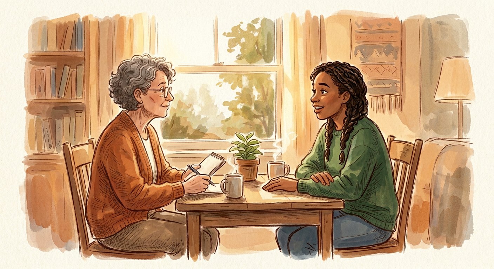
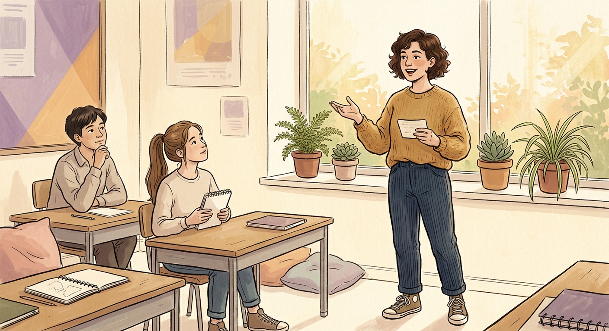
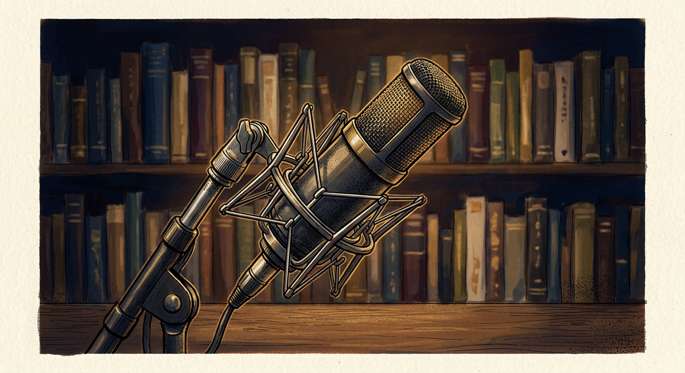

All lessons · Reading, Writing, Speaking, Listening & Vocabulary
Format, six task types, marking criteria, 4-paragraph structure, vocabulary, and practice exercises.
Start Lesson →Four essay types, structure, introductions, body paragraphs, conclusions, linking language, and practice.
Start Lesson →
Format, marking, strategy, weak vs. strong answers, the Answer → Reason → Detail formula, and practice topics.
Start Lesson →
Preparation strategy for your 1 minute, how to structure a 2-minute talk, and practice cue cards with model answers.
Start Lesson →
Opinion language, speculation, cause & effect, how to extend your answers, and sample questions with model responses.
Start Lesson →